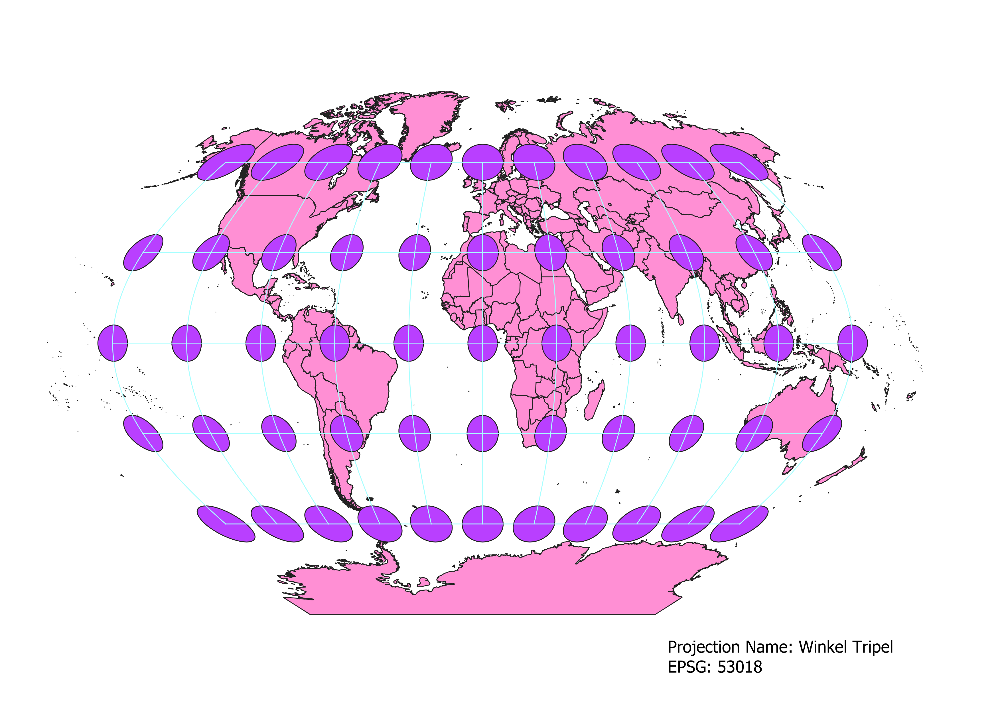
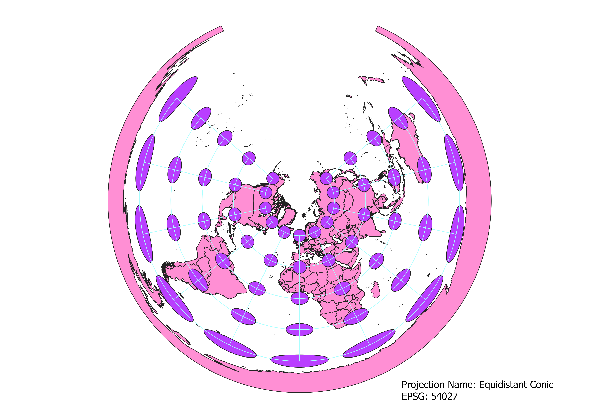
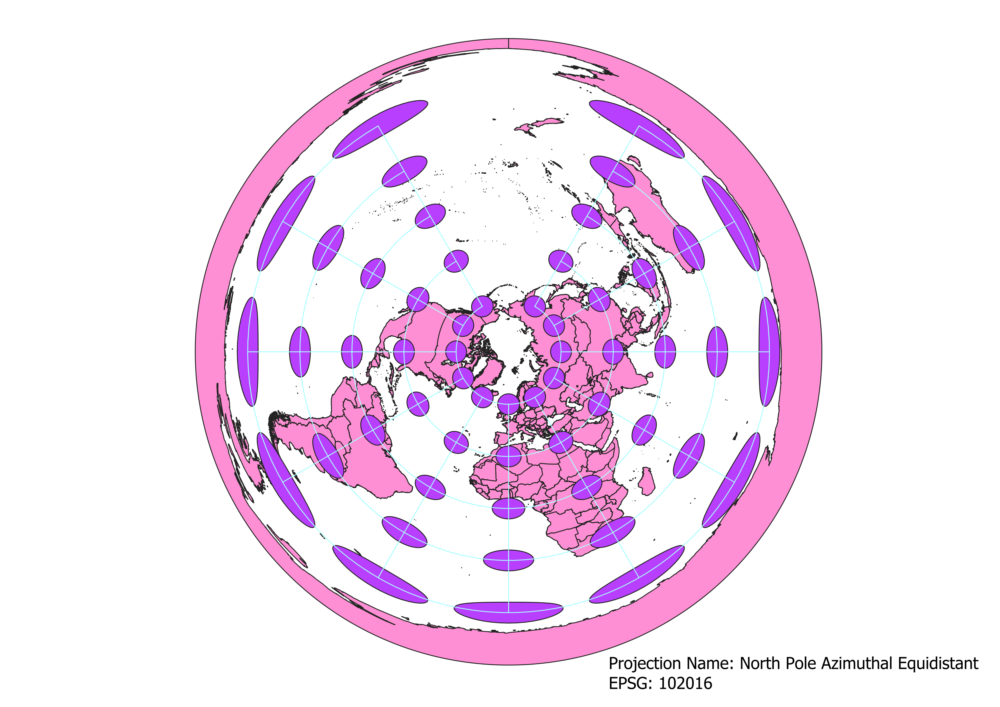
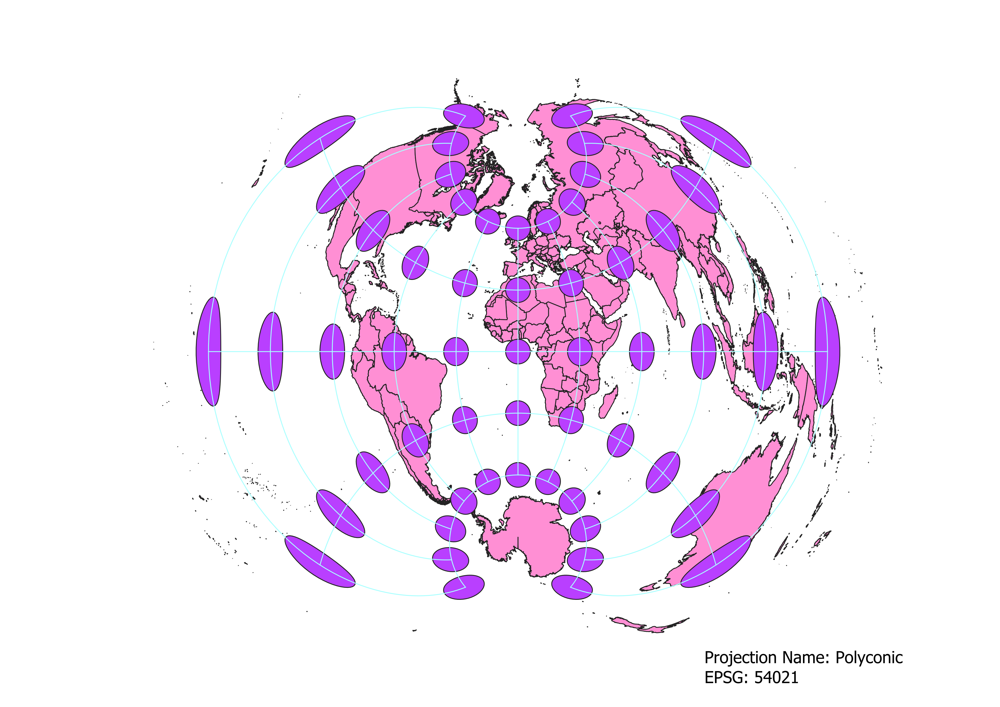
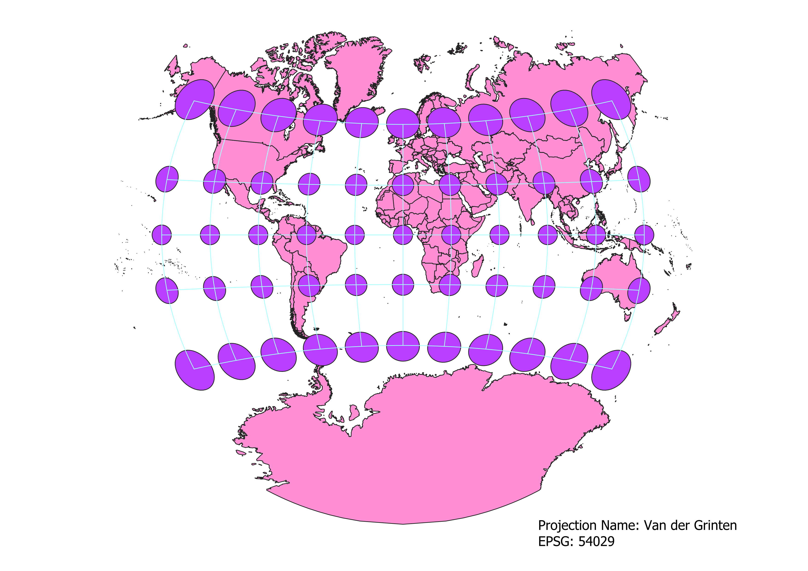

In this project I learned how to display images in different projections
How I displayed maps in different projections using QGIS
You can write a paragraph here
WGS84 Projection
This variant of the Mercator projection preserves the shape of countries, but distorts their area. Notice how Greenland, a country 1/8the size of Africa, appears just as large as the African continent.
The closer a country is to the equator, the less distortion it suffers. This projection is commonly used in classrooms and is used by Google Maps.

Aitoff Projection
This modified azimuthal projection is similar to the Mercantor projection, but has some key differences. The first being its rounded
appearance. This shape helps to display the full shape of the continents (compare this full, round Antarctica to the Mercator's squarish, rolled out appearance),
but suffers more distortion around the edges of the map. It preserves country shape while distorting area; however, this projection sees far less area distortion
than the Mercator. Notice how small Greenland looks on this projection!

My Projections
Pseudo-Mercantor Projection
Some observations

Winkel Tripel Projection
Some observations

Cylindrical Equal Area Projection
Some observations

Equidistant Conic Projection
Some observations

North Pole Azimuthal Equidistant Projection
Some observations

Polyconic Projection
Some observations

Van der Grinten Projection
Some observations

Data used for this project
Download Natrual Earth 1:10m Cultural Vector